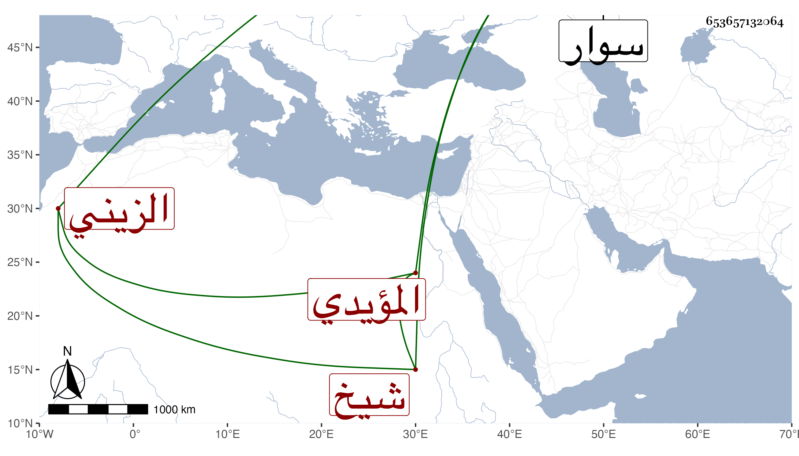

0902Sakhawi.DawLamic.ITO20230111-ara1.EIS1600.653657132064
Biography ID: 653657132064
225
جانبك الزيني المؤيدي شيخ . صار خاصكيا في دولة المظفر أحمد بن استاذه وتأمر عشرة ثم طبلخاناه كلاهما في ايام خشقدم ، ثم سافر في المجردين إلى سوار فعاد وهو مريض ولزم الفراش اشهرا ثم مات في مستهل رجب سنة أربع وسبعين وقد ناهز السبعين ، وكان عاقلا ساكنا صينا قليل الشر .
